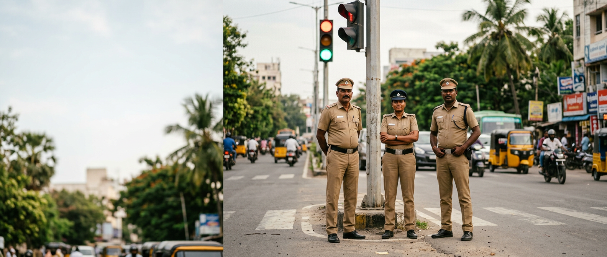

LIVE
LIVE

An Extension of the Traffic Police, Drawn From the Public.
Since 1977, the Tamil Nadu Police Traffic Warden Organisation has trained civilian volunteers to stand alongside Greater Chennai Police at junctions across the city — regulating traffic, easing congestion, and carrying road safety education into schools through the Road Safety Patrol.
Nearly Five Decades of Service to Chennai's Roads.
The Traffic Wardens Organisation was inaugurated in 1977, under G.O. Ms. No. 2268/Home Department, dated 10 August 1977 — established as a voluntary body to assist the Chennai City Police in road safety education, patrolling, and traffic regulation, both on regular duty and during special occasions such as festivals, elections, VIP visits, and night checks. Traffic Wardens serve without remuneration and are recognised through badges of rank.
The organisation was formally inaugurated in 1978 at Rajaji Hall, Chennai, by the Governor of Tamil Nadu, Thiru Prabhudoss Patwari, in the presence of the then Chief Minister, Thiru M.G. Ramachandran. Originally known as the Madras City Police Traffic Wardens' Organisation, it later expanded to Coimbatore, Madurai, Tiruchirappalli, Salem, North Arcot, and the Nilgiris districts — and was renamed under G.O. M.S. No. 1068, dated 18 July 1995, as the Tamil Nadu Traffic Wardens' Organisation.
Recognising the need to instil road safety habits early, the Road Safety Patrol was inaugurated in schools in 1981 as a dedicated wing of the organisation. For over four decades, professionals, businessmen, and officials from all walks of life have volunteered their time through this organisation — a tradition of civic service that continues today under the Greater Chennai Unit.
Our Journey
Organisation Founded
Inaugurated under G.O. Ms. No. 2268/Home Department, dated 10 August 1977, as a voluntary body to assist Chennai City Police.
Formal Inauguration
Formally inaugurated at Rajaji Hall, Chennai, by Governor Thiru Prabhudoss Patwari, in the presence of Chief Minister Thiru M.G. Ramachandran.
Road Safety Patrol Launched
RSP inaugurated in schools as a dedicated wing, bringing road safety education directly to the next generation.
Our Mottos
"We Live to Serve"
"Catch Them Young"
Vision, Mission & Core Values
Vision
A city where every road user — driver, rider, and pedestrian — moves safely, supported by a trained volunteer force working hand-in-hand with Greater Chennai Police.
Mission
To train and deploy volunteer traffic wardens who reduce congestion, support emergency response, and build lasting road safety habits in the next generation through school-based education.
Core Values
Integrity, discipline, and community service — Traffic Wardens serve without remuneration, guided by a genuine sense of civic duty and respect for public safety.
Organisation Structure
Senior Leadership & Office Bearers
Traffic Warden Hierarchy & Ranks
Divisions & Zonal Structure
Detailed organisation chart, office bearer names, and zonal divisions pending confirmation from TPTWO leadership — to be published once verified.
Office Bearers
Name Pending
Chief Warden
Name Pending
Deputy Chief Warden
Name Pending
Secretary
Name Pending
Treasurer
Names, designations, and photographs of current office bearers are being confirmed with TPTWO leadership and will replace these placeholders once verified.
Become Part of TPTWO's Story
Applications for the Traffic Warden Organisation are open year-round. No prior experience required — training is provided.
Apply to Join Us